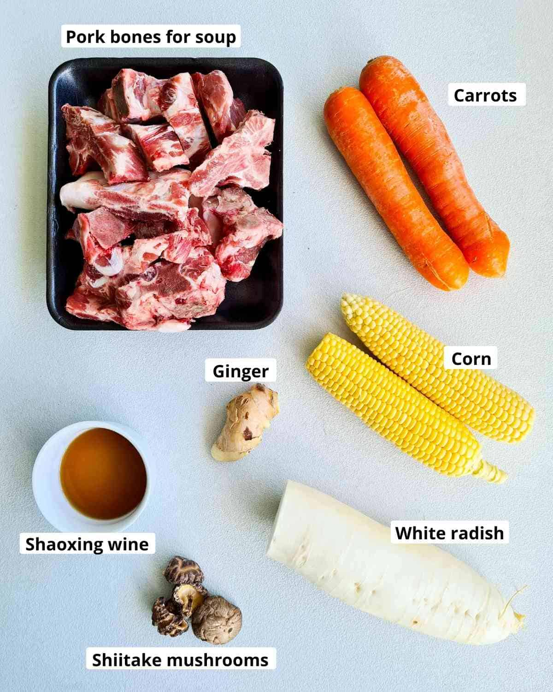

Chinese Pork Bone Soup
Home Page

Description
Chinese Pork Bone Soup is aromatic, easy, nutritious and very good for you. It is naturally sweet from the corn and carrots
whilst having a very umami-rich flavour profile. This profile can only be achieved through, like many things in life having
a long and slow process.
This recipe is taken from the good fellows at Casually Peckish, whilst their ad amount is more digestable unfortunately their
content is all over the place. There are hints and steps that are featured in the description that isn't included in the recipe
so the user has to constantly scroll back and forth to get the whole context.
The link to the original recipe is: Here
Ingredients
- 1kg pork bones
- 500 g white radish (daikon)
- 2 corns
- 2 carrots
- 4 dried shiitake mushrooms
- 1 thumb-sized ginger
- 2 tablespoon shaoxing wine
Image for reference

Steps
- Remove impurities
- In a large pot, add pork bones and enough cold water to cover the bones
- Bring the pot up to a boil over high heat
- Discard the water, rinse the pork bones under the tap and wash the pot
- Make the bone broth
- Return the pork bones into the pot with refreshed water. Add ginger slices and bring to a boil over high heat
- Once boiling reduce heat to the lowest heat possible so that it simmers
- Simmer with the lid on for 3 hours or longer, minimum is 2 hours
- After 3 hours add carrots, white radishes, dried shiitake mushrooms, shaoxing wine and salt.
- Once again bring up to a boil over high heat then reduce to the lowest heat. Simmer with lid on for 40 minutes
- Add corn kernels and simmer with the lid on for a final 20-60 minutes
- Taste the soup and add more salt to taste if desired
Notes
- Simmer the soup using the smallest cooktop burner on the lowest heat
- Low heat is key to clear and flavourful bone broth
- Make sure you check on the soup so that you don't end up evaporating half of the soup
- Other vegetable options:
- Lotus roots instead of white radish
- Can also add dried seaweed
- Optionally can also add a handful of goji berries into the step alongside the other vegetables